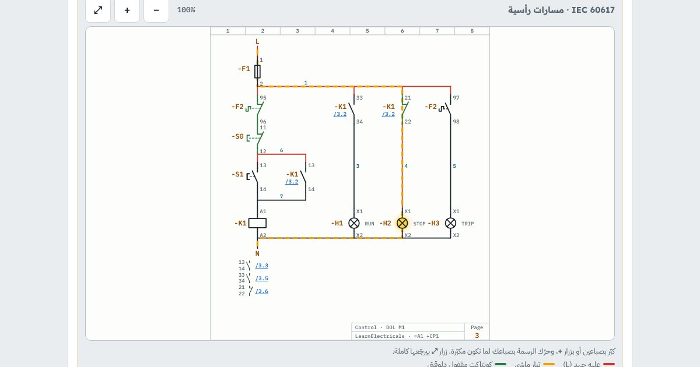

كورس · الرسومات الكهربيةبالعربي
كورس قراءة الرسومات الكهربية
تقرأ رسمة أي لوحة وتفهمها، وتتتبّع منها العطل بالأفوميتر ولو رأيت اللوحة أول مرة.
أول درسين مفتوحان للتجربة

المحتوى
الدروس
بالترتيب، وفي كل درس شرح بسيط وتجارب بيدك وأسئلة.
- أنواع الرسومات الكهربيةمفتوح للجميعالـ Single line ودائرة القوى ودائرة التحكم والـ Wiring والـ Terminal ورسمة اللوحة والـ P&ID وجدول الكابلات: كل منها يجيب عن سؤال
- مثل رسومات المباني
- جولة في الرسومات
- تمرين8 أنواع من الرسومات
- تعرفها من النظرة الأولى
- تمرين: أي رسمة أفتح؟
- تمرينأي رسمة؟
- من الموقع
- أسئلةأسئلة الدرس
- الرموز: IEC و ANSI/NEMAالتلامسات NO وNC، والملف، والأزرار، والسلكتور، والليمت، والتايمر، والأوفرلود، والقاطع، والفيوز، والمحرك، والمحوّل، والمصابيح والحساسات
- مدرستان بالمعنى نفسه
- بطاقات الرموز
- تمرين19 رمزًا
- رموز تُربك
- تمرين: طابق الرمز
- تمرينطابق الرمز
- أسئلةأسئلة الدرس
- ترقيم الأجهزة والأطراف والكروس ريفرنستاجات -K1 و-Q1 و-F1، وأطراف 13-14 و21-22 وA1-A2 و95-96، وأرقام الأسلاك، والمرجع /3.4
- اسم الجهاز (Device tag)
- أرقام الأطراف (Terminal markings)
- أرقام الأسلاك (Wire numbers)
- الكروس ريفرنس: من تلامس إلى ملف
- تمرينصفحتان وكروس ريفرنس
- تمرين الأرقام
- تمرينأطراف وتاجات ومراجع
- أسئلةأسئلة الدرس
- قراءة دائرة التحكمخطوة بخطوة في دائرة DOL ودائرة العكس، ومسار التيار وأنت تضغط الأزرار
- كيف تقرأ أي دائرة تحكم
- دائرة DOL: اقرأ وشغّل
- تمرينالقراءة مسارًا مسارًا
- محاكيشغّل الدائرة
- دائرة عكس الحركة والإنترلوك
- محاكيشغّل دائرة العكس
- من الموقع
- أسئلةأسئلة الدرس
- الـ Single line ودائرة القوىمن المحوّل إلى الـ MDB فالقواطع فالـ MCC فالمحرك: التصنيفات ومقاسات الكابلات على الرسمة
- ما معنى Single line؟
- اقرأ الـ Single line
- تمرينSingle line diagram
- الأرقام على الرسمة
- دائرة القوى وكيف تُقرأ
- تمرينالمغذّي نفسه بطريقتين
- تمرين التصنيفات
- تمريناحسب واقرأ
- أسئلةأسئلة الدرس
- رسمة اللوحة والـ Terminal stripالدين ريل والمجاري والأجهزة، والترمنالات X1 وX2، وعروق الكابل والفيرول، وتتبّع سلك من الحساس إلى الـ PLC
- رسمة اللوحة (Panel layout)
- تمرينMounting plate =A1 +CP1
- الترمنالات: -X1 و -X2
- عروق الكابل والفيرول
- تتبّع السلك حتى الـ PLC
- تمرينمن الموقع إلى الـ PLC
- أسئلةأسئلة الدرس
- تتبّع العطل من الرسمة + الامتحان النهائيالعَرَض ← الرسمة ← نقطة القياس ← العطل، ولعبة الأعطال، والامتحان النهائي
- الطريقة: 6 خطوات
- لعبة تتبّع الأعطال
- تمرينTroubleshooting
- أسئلةأسئلة الدرس
- امتحانالامتحان النهائي
الكورس بالأرقام
7دروس من الرموز حتى تتبّع العطل
2معيارا رموز جنبًا إلى جنب: IEC وANSI/NEMA
1امتحان نهائي وشهادة إتمام
22تمرينًا وتجربة وسؤالًا تُصحَّح تلقائيًا
الرسومات الكهربية
ماذا ستتعلّم
- تعرف أنواع الرسومات وأيّها تفتح لكل سؤال
- تقرأ رموز IEC وANSI/NEMA للتلامسات والملف والحماية
- تفهم تاجات الأجهزة -K1 و-Q1 وأرقام الأطراف 13-14 و95-96
- تنتقل بالكروس ريفرنس من الملف إلى تلامساته
- تقرأ دائرة DOL ودائرة العكس خطوة بخطوة
- تقرأ الـ Single line من المحوّل إلى المحرك بالتصنيفات ومقاسات الكابلات
- تتتبّع سلكًا من الحساس إلى الترمنال إلى الـ PLC على رسمة اللوحة
- تستخرج العطل من الرسمة: العَرَض، ثم نقطة القياس، ثم العطل
لمن
لمن هذا الكورس
- لفنيي الكهرباء والصيانة في المصانع والمباني
- لطلبة هندسة الكهرباء والميكاترونكس والدبلومات الفنية
- إذا كنت تستلم لوحات أو تقوم بالكوميشننج
- إذا كنت تصلح الأعطال وتحتاج أن تصل إلى العطل أسرع
أسئلة متكررة
قبل أن تسأل
هل أحتاج خلفية قبل الكورس؟
يجب أن تفهم الجهد والتيار وتستخدم الأفوميتر، وأن تعرف كيف يعمل الكونتاكتور والريلاي. إن لم تكن كذلك، فابدأ بكورس الأساسيات وكورس الكلاسيك كنترول.
هل يشرح رموز IEC أم الأمريكية؟
الاثنين جنبًا إلى جنب: رموز IEC الموجودة في أغلب اللوحات، ورموز ANSI/NEMA الموجودة في الأجهزة والرسومات الأمريكية.
هل توجد شهادة؟
نعم. عندما تُنهي كل الدروس والامتحان النهائي وأنت مسجّل الدخول بحسابك، تحصل على شهادة إتمام بكود تحقق وQR.
هل الكورس مجاني؟
أول درسين مفتوحان لكل من لديه حساب. وتُفتح بقية الدروس عند شراء الكورس.
هل يعمل على الموبايل؟
نعم. الرسومات تتكبّر وتتحرّك بإصبعك، والشاشة الأكبر أريح.
هل أنت جاهز لتتعلّم قراءة الرسومات؟
أول درسين مفتوحان للتجربة. ادخل الآن وتابع على راحتك، ويُحفظ تقدّمك.